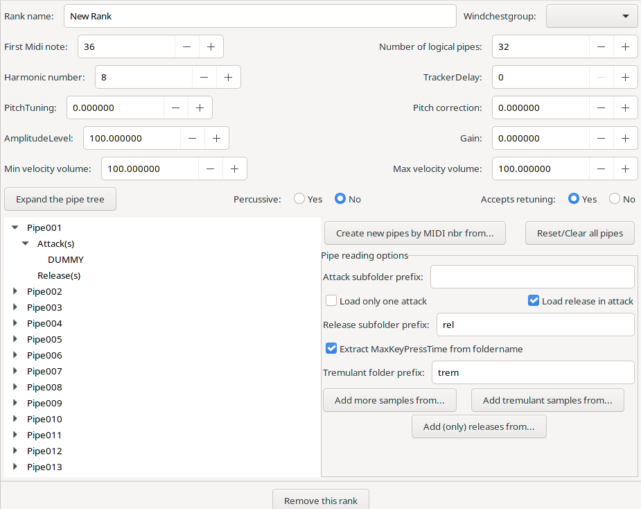

Ranks are arrays of pipes that sound from a manual when a stop referencing a rank is activated. The Parameter window for a rank is shown here:

Name (string, required) Name of the rank. The name may be presented to the user in lists too, therefore it should be descriptive.
First Midi Note (integer 0-256, if the rank is part of a stop section, the default value is derived from the associated manuals. Otherwise required) Midi note number of the first pipe
Number Of Logical Pipes (integer 1-192, required) Number of pipes in this rank
AmplitudeLevel (float 0-1000, default: 100) Linear amplitude scale factor applied to the whole rank. 100 means no change.
Gain (float -120 - 40, default: 0) Amplitude scale factor in dB applied to the whole rank. 0 means no change.
PitchTuning float -1800-1800, default: 0) Re-tune the rank by the specified number of cents.
TrackerDelay (integer 0 - 10000, default: 0) Delay introduced by the tracker for that rank.
Harmonic number (float 1-1024, default: 8) Harmonic number (= 64 / rank size), e.g. 2 2/3 => 64 / (2 2/3) = 24. The harmonic number is used determining alternative tunings.
Pitch correction (float -1800-1800, default: 0) Correction factor in cent for the pitch specified in the sample. This setting is used for re-tuning to other temperaments.
WindchestGroup (integer 1 - number of windchests, required) specify the windchest on which the pipes of the are placed.
Percussive (Boolean, required) If true, the samples are played as is (without any loop/release handling) This is used for things like chimes, or for stop or key activation noises.
Min velocity volume (float 0-1000, default: 100) Linear amplitude scale factor at low velocity applied to the whole rank. 100 means no change.
Max velocity volume (float 0-1000, default: 100) Linear amplitude scale factor at high velocity applied to the whole rank. 100 means no change.
Accepts re-tuning (Boolean, default: true) Determines if the rank will be re-tuned according to the current temperament. Re-tuning should be only disabled for sound effects.
The Bottom half of the window (below the Expand the pipe tree button) is used for loading samples. See Working with samples for more information.